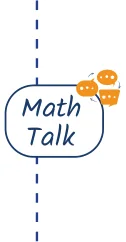
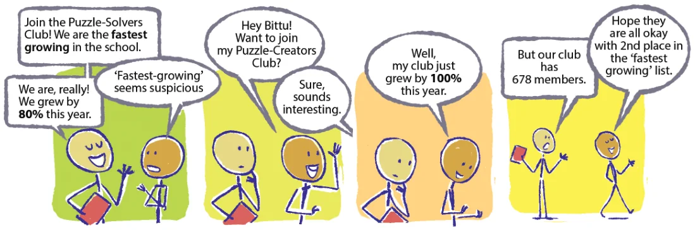
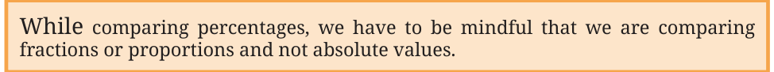
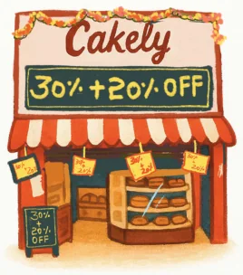
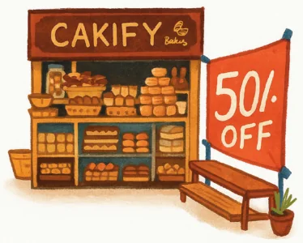
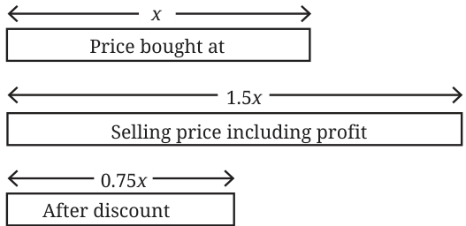

Would You Rather?

You have won a contest. The organisers offer you two options to choose from: Option A: You deposit ₹100 and you get back ₹300. Option B: You deposit ₹1000 and you get back ₹1500. What is the percentage gain each option gives? You can choose any option only once. Which option would you choose? Why?



A provision store is offering a stock clearance sale. Customers can choose one of the two options \(- 20%\) discount or ₹50 discount - for any purchase above ₹150. Which option would you choose if you want to:
- (i)buy items worth ₹180
- (ii)buy items worth ₹225
- (iii)buy items worth ₹300

Example 12: A bakery called Cakely is offering \(a 30% + 20%\) discount on all cakes. Another bakery called Cakify is offering a 50% discount on all cakes. Would you rather choose Cakely or Cakify if you want the cheaper cost? It seems that both the options should give the same benefit. Although mathematically \(30% + 20%\) is the same as 50%, the usage of \(30% + 20%\) in shopping means compounding. Suppose you want to buy a cake worth ₹200.

Cakely’s \(30% + 20% \to\)
Applying the 30% discount \(\to\) the price of cake
is ₹200 - ₹60 = ₹140.
Applying the 20% discount on ₹140 \(\to\) the price of cake is ₹140 - ₹28 = ₹112. Cakify’s \(50% \to\) The 50% discount makes the price of the cake ₹100.

A Mishap
Example 13: After Surbhi bought cookware from the wholesaler, she kept a profit margin of 50% on all the products. To clear off the remaining stock, she thought she would offer a 50% discount and come out without any loss.
- (i)Do you think she didn’t make any loss?
- (ii)If she had sold goods (originally) for ₹12,000 after discount, how
much loss did she incur? What is the percentage loss?
- (iii)What should have been the percentage discount offered so that she
sold the goods at the price she had bought (i.e., no profit or loss)?

Let us model the situation first. Suppose the worth of the products she bought from the wholesaler is x. The worth corresponding to the selling price (with a 50% margin) is 1.5x. A 50% discount on this price will make the worth 0.75x.
- (i)This means the selling price is \(\frac{3}{4}\) of the price the goods were bought
at, i.e., a 25% loss.
- (ii)If she had sold goods worth ₹12,000,
\(0.75x = 12,000 x = 16,000\).
She lost ₹4000.
- (iii)To sell the goods at the same price, the discount offered should be
\(1.5x - d \times (1.5x) = x d = \frac{1}{3} = 0.33\).
The discount offered should have been 33.33%.
Ariba and Arun have some marbles. Ariba says, “The number of marbles with me is 120% of the marbles Arun has”. What would be an appropriate statement Arun could make comparing the number of marbles he has with Ariba’s?